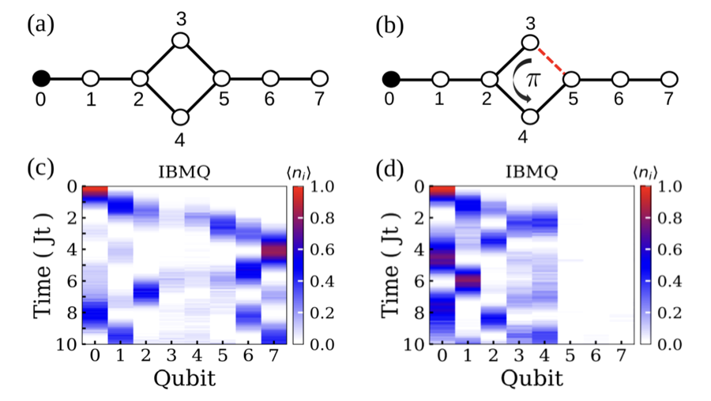
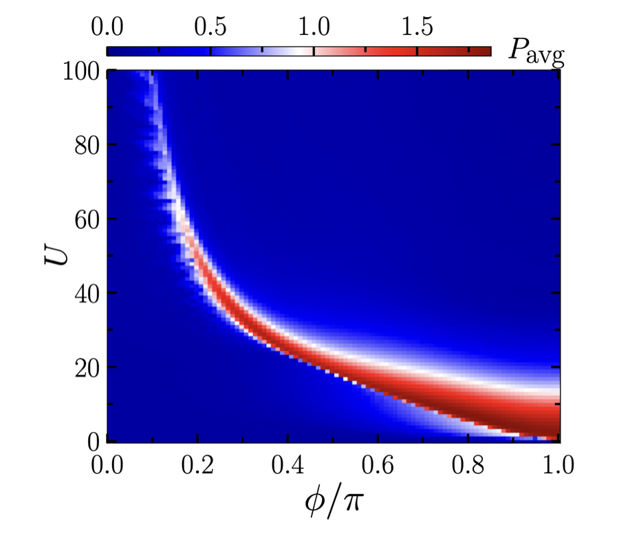
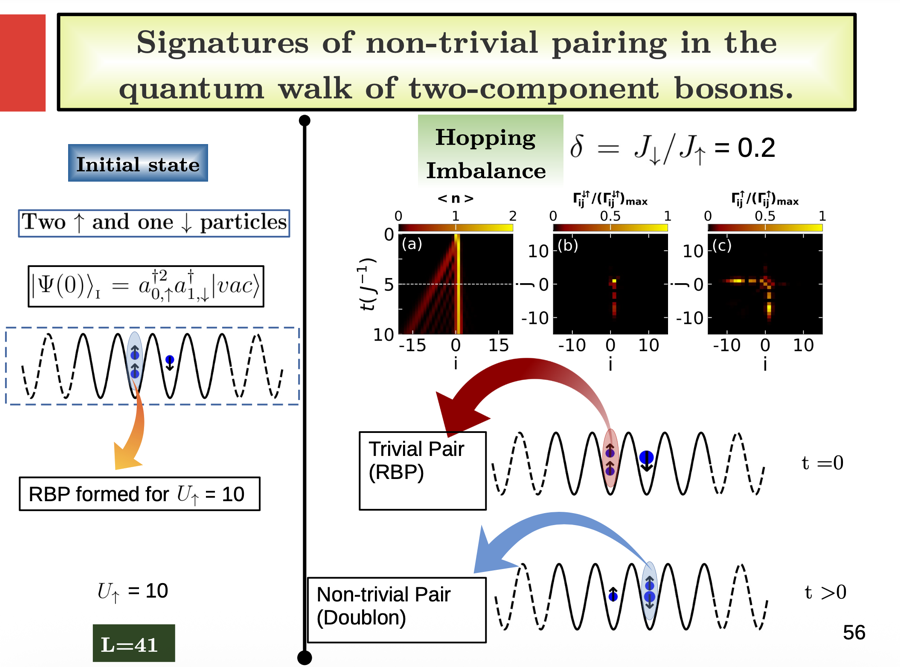

Overview
My research focuses on quantum many-body systems using theoretical modeling, numerical simulation, and quantum-circuit-based approaches. I study how interactions, topology, disorder, and external fields influence quantum transport, localization, and dynamical behavior in low-dimensional systems.
A major direction of my current work is digital quantum simulation on near-term quantum devices, where condensed matter models are mapped into quantum circuits and optimized for noisy superconducting hardware.
Research Areas
- Digital quantum simulation: quantum-circuit implementations of lattice and many-body models on NISQ hardware.
- Quantum walks & transport: transport, localization, and pairing dynamics in interacting low-dimensional systems.
- Flat-band & topological systems: compact localization and tunable transport in flat-band and topological lattices.
- Localization phenomena: disorder- and quasiperiodicity-driven localization transitions.
- Scalable NISQ algorithms: noise-aware circuit optimization for larger spin and condensed matter models.
- Quantum machine learning: variational and kernel-based quantum algorithms for learning properties of many-body states and identifying quantum phases.
- Many-body quantum dynamics: nonequilibrium dynamics, quantum correlations, and critical behavior.
Methods & Tools
- Quantum computing
- Trotterized time evolution, circuit compression and optimization, error mitigation, noise modelling, VQA, QITE, hardware execution on IBM Quantum
- Numerical methods
- MPS, DMRG, TEBD, TDVP, exact diagonalization, cluster mean-field theory, stochastic series expansion QMC
- Software
- Python, Qiskit, Qiskit Runtime, Git, Linux, HPC clusters
Selected Works

Digital quantum simulation of flat-band dynamics
High-fidelity digital quantum simulations of flat-band and all-bands-flat lattices using tensor-network-based circuit compression. The compressed circuits reveal controllable quantum transport, where the all-bands-flat lattice acts as a quantum switch.
Quantum Sci. Technol. 11, 035064 (2026) IF 4.9

Flux-enhanced localization and reentrant delocalization
Magnetic flux can enhance localization and induce reentrant delocalization in interacting bosonic quantum walks on ladder geometries.
Phys. Rev. A 109, 043308 (2024) IF 3.0

Non-trivial pairing in two-component quantum walks
Signatures of nontrivial on-site pairing in the quantum walk of strongly interacting two-component bosons in a one-dimensional lattice, where competing intra- and intercomponent interactions lead to bound-state formation.
Phys. Rev. Lett. 129, 050601 (2022) IF 9.4